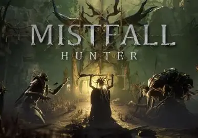
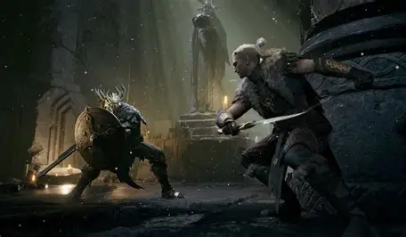
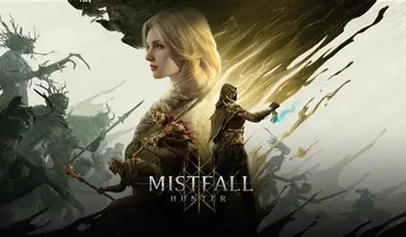

Mistfall Hunter

Mistfall Hunter é um RPG de extração PvPvE onde os jogadores escolhem uma classe, enfrentam inimigos corrompidos e competem para extrair recompensas valiosas. YouTube Classes e Armas: Mistfall Hunter oferece seis classes, cada uma com suas próprias armas e habilidades. Ciclo de Jogo: O ciclo básico inclui preparar-se no Hub, entrar em uma expedição, lutar e saquear, derrotar um Returner Woodling, canalizar a extração e sair antes que a morte leve as recompensas. Guias e Tutoriais: A Mistfall Hunter Wiki oferece trinta guias em seis temas, incluindo primeiras extrações, classes e armas, builds, planejamento de rotas, gastos no acampamento e mudanças de cada patch.

